Healthy Food
You can find all kinds of information regarding healthy food, nutritional composition, benefits of each food, the danger of overtaking food, and much more information in the following articles:

20 Healthiest Foods | Nutrition Facts and Health Benefits
Choosing healthy foods and meals rich in vitamins and minerals that our body needs helps us to live a life free from ailments, full of gladness and health, we will present to you in this article 20 foods that researchers recognized as the best in terms of supplying the body with the nutrients it needs, through experiments and researches that included thousands of vegetables, fruits and seeds, and they chose these 20 as the healthiest and most beneficial.
Table of Content
- The Top 20 Healthiest Foods
- 1- Hot Pepper
- 2- Red Pepper
- 3- Almonds
- 4- Peas
- 5- Long-stem Broccoli
- 6- Green Cabbage
- 7- Red Cabbage
- 8- Basil
- 9- Frozen Spinach
- 10- Dandelion Greens
- 11- Pink grapefruit
- 12- Green Onion
- 13- Mandarin Oranges
- 14- Watercress
- 15- Dried celery
- 16- Dry parsley
- 17- Beet greens
- 18- Swiss Chard
- 19- Pumpkin seeds
- 20- Chia seeds
- List of the 20 healthiest foods for the human body
The Top 20 Healthiest Foods
1- Hot Pepper
One of the healthiest foods for the human body, it has a nutritional value score of 62, and the calories reach 324 calories (100 g). Chili pepper is distinguished by the fact that it contains many substances necessary for the body.
2- Red Pepper
One of the most beneficial foods for the body is red pepper. Its nutritional value score is 62, and the caloric content reaches 324 calories per 100 g.
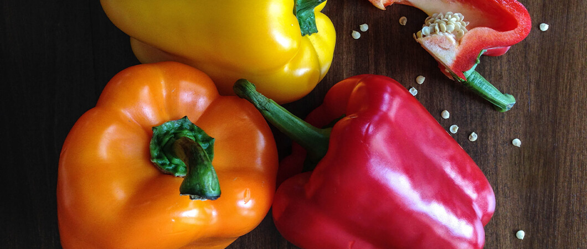
3- Almonds
With a nutritional score of 97, it is considered one of the most important foods beneficial to human health. Its caloric content amounted to 579 calories in (100 g). Almond is characterized by its richness in monounsaturated fatty acids, and is considered a very useful food for diabetics and chronic heart disease patients. Furthermore, a research carried out by a group of Spanish scientists, that consuming 74 g of almonds on a daily basis in pregnancy plays a big role in developing the intelligence of the fetus.
4- Peas
Peas are one of the well-known foods that add a special taste at the lunch table, the nutritional score is 67, and its caloric content is 77 calories per 100 g. Peas are also a food that is rich in phosphorous, magnesium, iron, zinc and fiber.
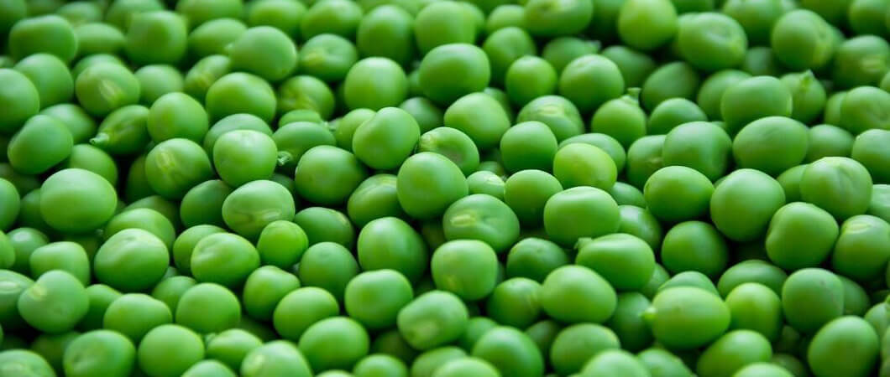
5- Long-stem Broccoli
It is distinguished by its long stem, and its flower size is less than 8. The nutritional value for this type of food is 62, and it contains 22 calories in (100 g). Long-stem broccoli differs from the regular broccoli as it belongs to the radish family, and it is considered a fiber-rich food.
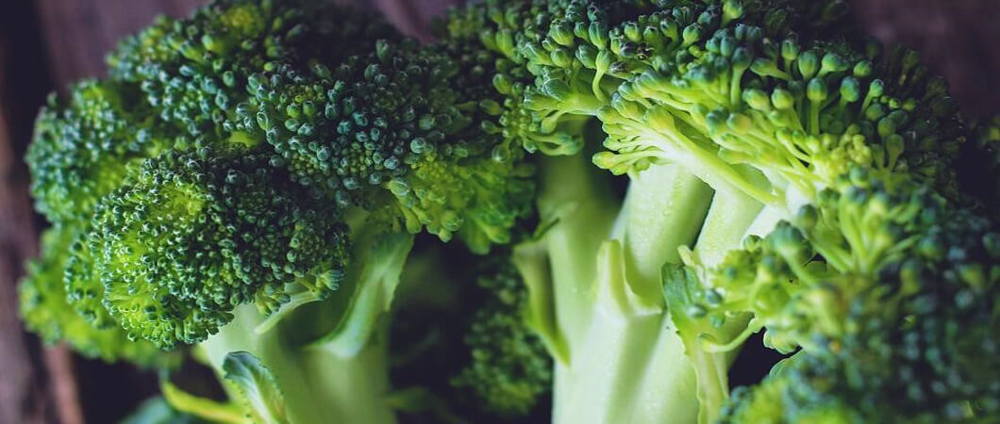
6- Green Cabbage
Green cabbage is a type of cabbage that does not have a core inside, it is highly rich in fiber, and have a nutritional score of 63, and its caloric content is 32 calories in (100 g). It helps to lose weight, as it contributes to delaying the feeling of hunger.
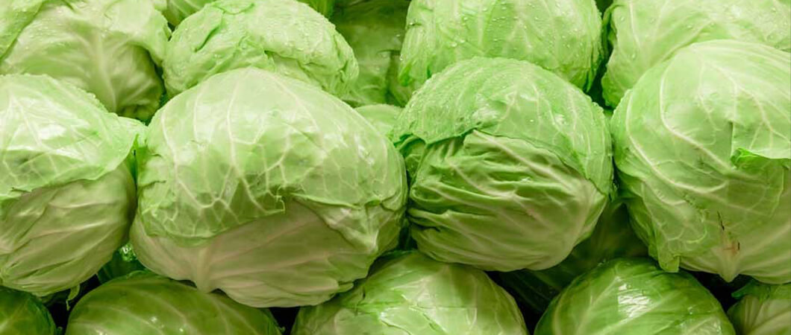
7- Red Cabbage
Red cabbage is one of the most delicious foods that is rich in fiber, its nutritional value score is 65, and its calories content is 31 calories per 100 g. Red cabbage is also characterized by a high content of vitamins and trace minerals.
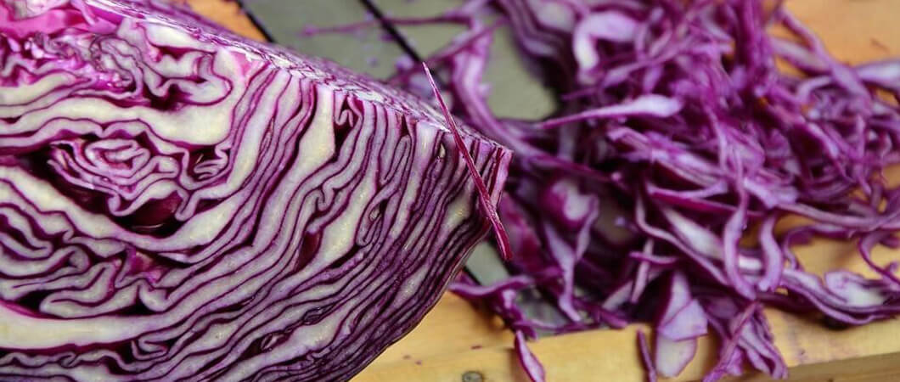
8- Basil
Basil is known as the heart food, as it strengthens and protects the heart from diseases, and is said to have a powerful antibacterial and antifungal properties. Basil have nutritional value score of 63, and caloric content of 23 calories per 100 g.
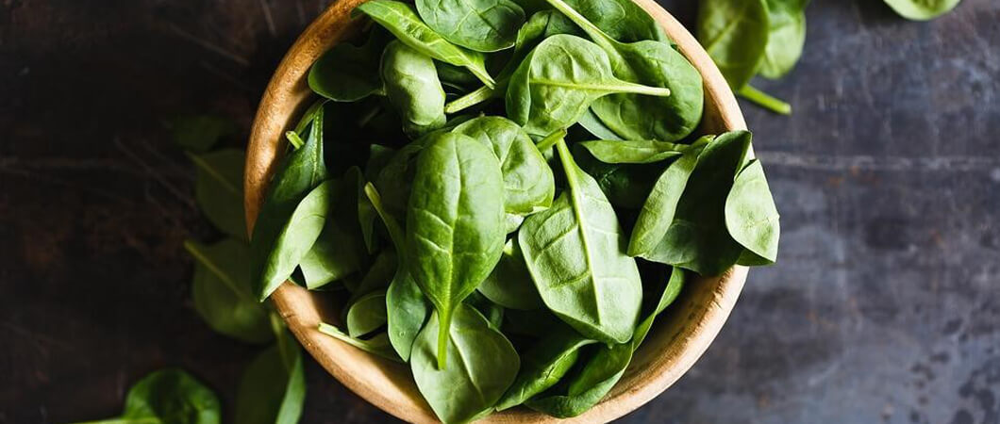
9- Frozen Spinach
Frozen spinach is rich in magnesium, vitamin A and folic acid, and has a nutritional score of 64, and the caloric content of 29 calories in each 100 g. Frozen spinach is considered of a greater nutritional value than fresh spinach.
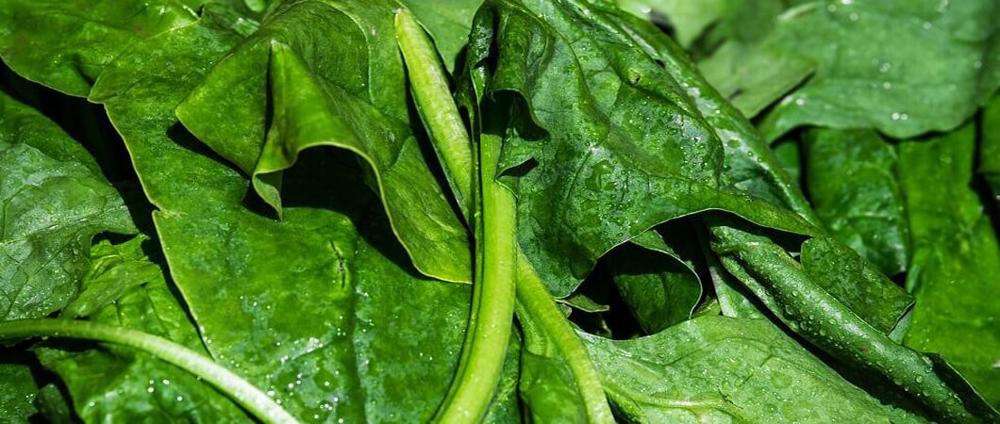
10- Dandelion Greens
Dandelion greens are one of the richest foods in calcium and vitamin A and C, and with a nutritional score of 64, and 45 calories per 100 g.
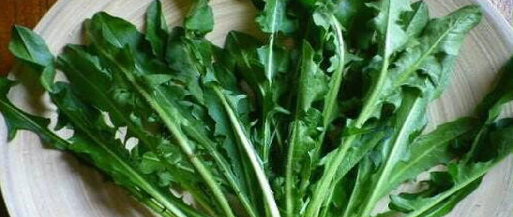
11- Pink grapefruit
Its nutritional value score is 64, and its caloric content is 42 calories per 100 g. It contains a lot of nutrients that have great benefits such as helping with gastroesophageal reflux, reducing atherosclerotic plaques in the arteries, and stopping the spread of malignant cells, among others.
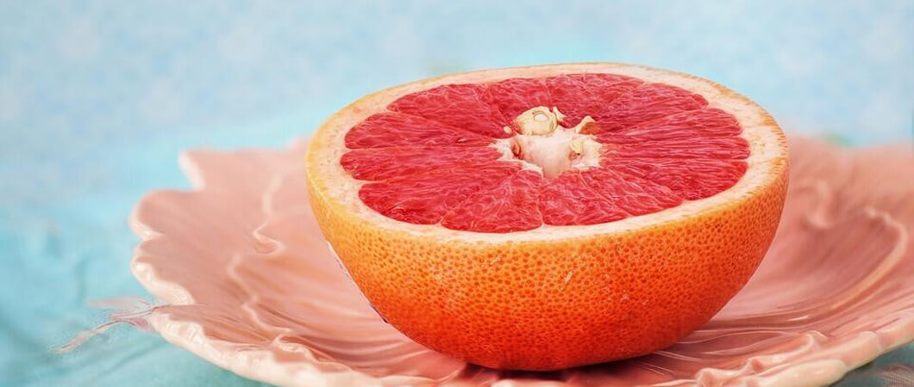
12- Green Onion
Among the best healthy foods, green onion is a nutrient known to be rich in copper and magnesium, in addition to being a great source of vitamin K. Green onions has a nutritional score of 65, and the caloric content is 27 calories in each 100 g.
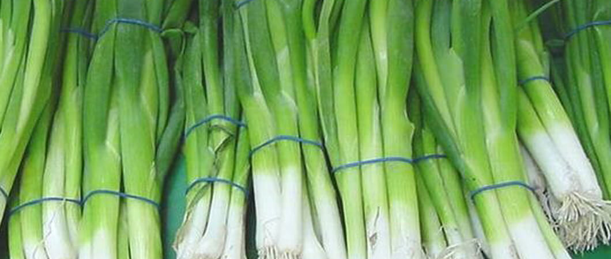
13- Mandarin Oranges
This fruit belongs to the family of citrus fruits that have a nutritional score of 67, and a caloric content of 53 calories in each 100 g. Mandarin oranges are rich in sugars, carotenoids and vitamin A.
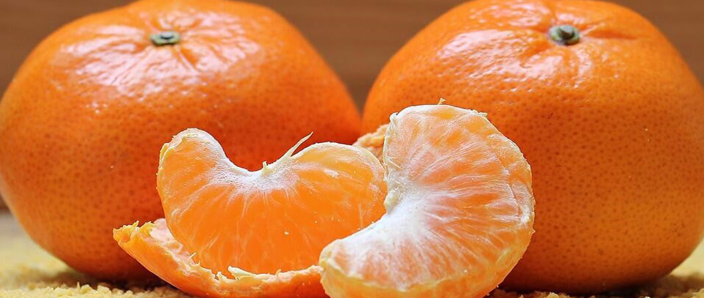
14- Watercress
Watercress is considered an amazing healthy food, with a nutritional score of 68, and a caloric content of 11 calories per 100 g. This plant, which lives in freshwater streams, is used as a treatment for deficiency of trace minerals in the body.
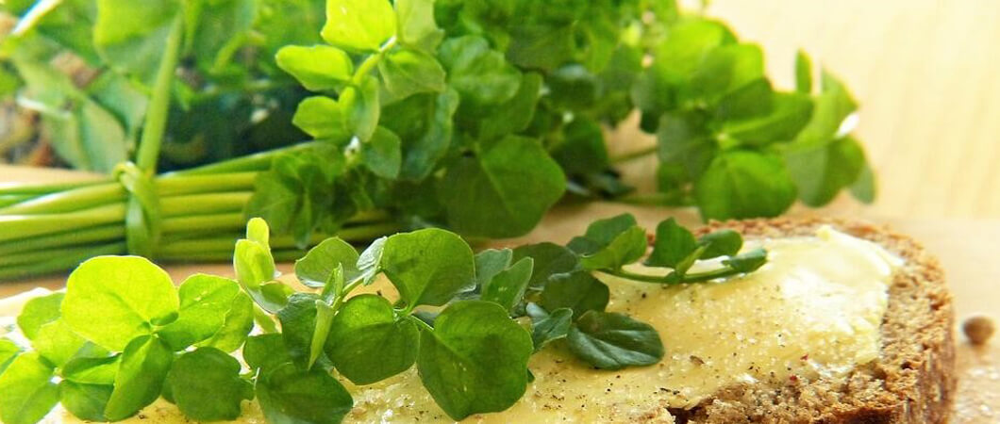
15- Dried celery
It is dried in the form of leaves, and used in food seasoning or flavoring. Dried celery is an important source of vitamins, minerals and amino acids, the value score for dried celery is 68, and the caloric content is 319 calories in each 100 g.
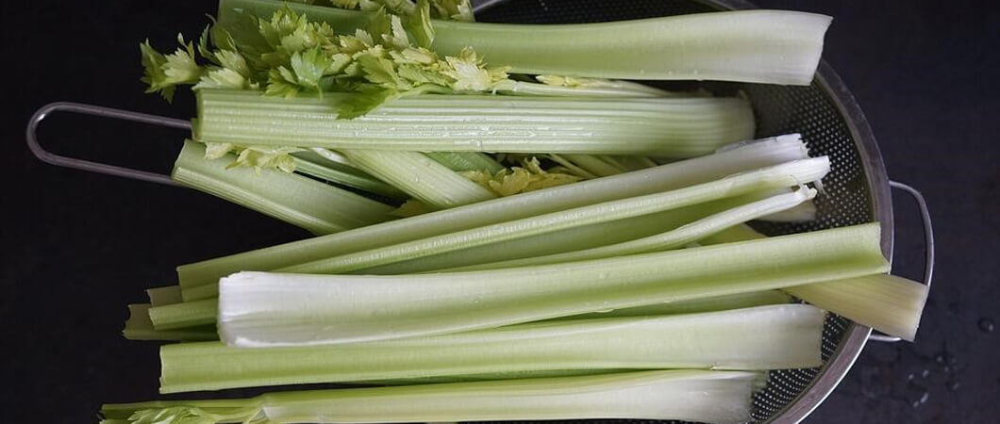
16- Dry parsley
Dry parsley is among the foods that contain high calories, 292 calories in 100 g, with nutritional value score of 69. Parsley, which can be dried and used as a kind of spices, is a food rich in bone and teeth nutrients, such as fluoride, boron and calcium.
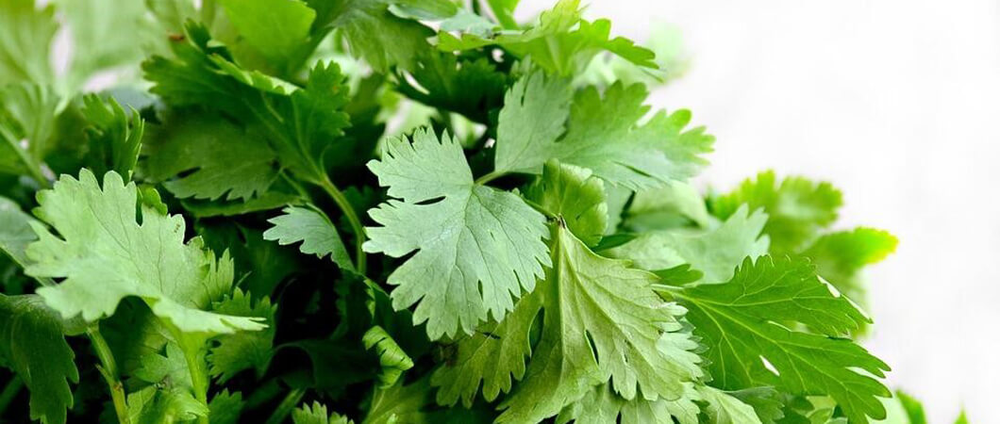
17- Beet greens
Nutritional value score: 70, Caloric content of 22 calories per 100 g
Beet greens contain calcium, iron, vitamin K and B vitamin group (especially B2), which qualifies it to be one of the best in the healthy food list.
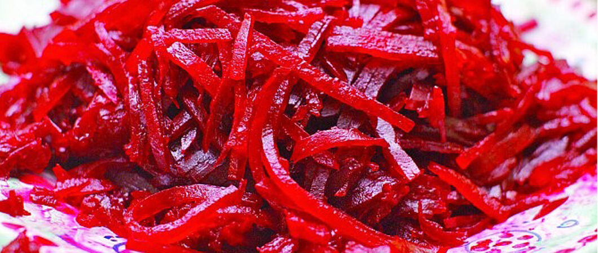
18- Swiss Chard
By eating Swiss chard, you can benefit from the wealth of nutrients it contains which reflects on your general health and wellbeing. Swill chard has a lot of benefits to your health, among which it helps to lower blood pressure, enhance blood circulation, and protect the body from heart disease and stroke. Chard have a nutritional value of 78, and includes 19 calories in each 100 g, and in addition to that it contains calcium, copper, iron, magnesium, and potassium.
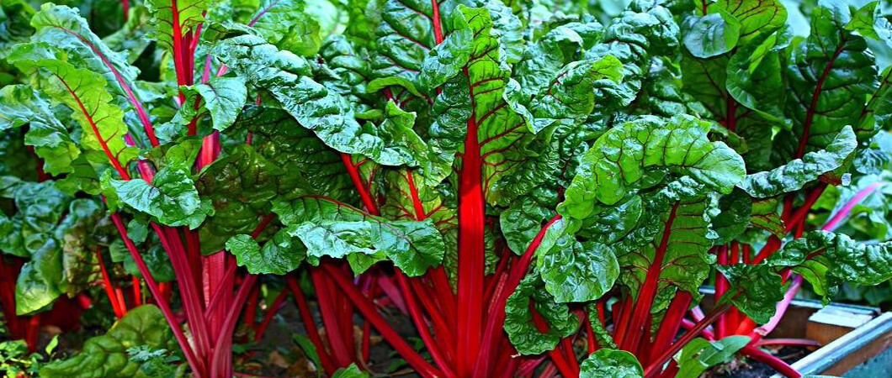
19- Pumpkin seeds
Pumpkin seeds make one of the most important sources of iron and manganese. Pumpkin seeds have a food classification degree of 84, and their caloric content is 559 calories per 100 g.
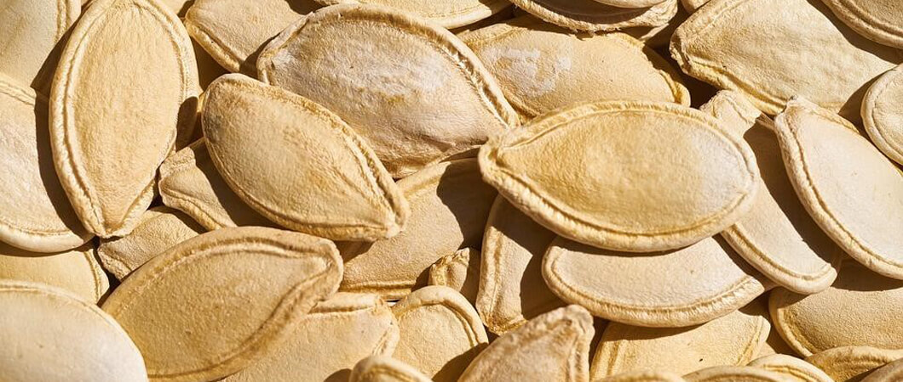
20- Chia seeds
Black seeds have a high content of fiber, protein, linolenic acid, phenol acid and various vitamins.
The nutritional value score for these seen is 85, and the caloric content is 19 calories (100 g).
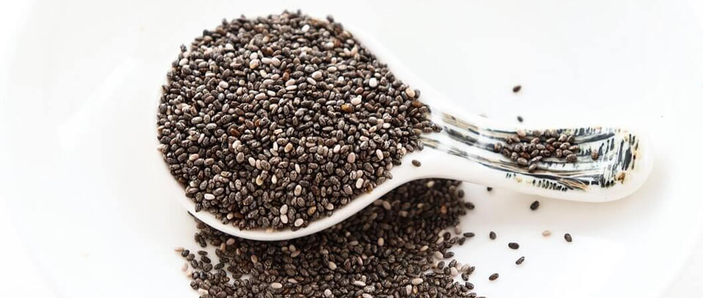
List of the 20 healthiest foods for the human body
Here is a list of the 20 healthiest types of foods for the body, along with their nutritional values, and the number of calories they contain:
|
Type of Food |
Nutritional Score |
Caloric Content |
|
|
1 |
Hot Pepper |
62 |
324 |
|
2 |
Red pepper |
62 |
324 |
|
3 |
Almonds |
97 |
579 |
|
4 |
Peas |
67 |
77 |
|
5 |
Long-stem broccoli |
62 |
22 |
|
6 |
Green Cabbage |
63 |
32 |
|
7 |
Red Cabbage |
65 |
31 |
|
8 |
Basil |
63 |
23 |
|
9 |
Frozen spinach |
64 |
29 |
|
10 |
Dandelion greens |
64 |
45 |
|
11 |
Pink grapefruit |
64 |
42 |
|
12 |
Green onions |
65 |
27 |
|
13 |
Mandarin oranges |
67 |
53 |
|
14 |
Watercress |
68 |
11 |
|
15 |
Dried celery |
68 |
319 |
|
16 |
Dried parsley |
69 |
292 |
|
17 |
Beet greens |
70 |
22 |
|
18 |
Swiss chard |
78 |
19 |
|
19 |
Pumpkin seeds |
84 |
559 |
|
20 |
Chia seeds |
85 |
19 |
Ilajak Medical© | A passion for care
Source: BBC Türkçe + CNN TURK
Latest Articles, Health News, Clinical Research, and more.
Keratoconus and cataracts , symptoms and types
What is Keratoconus, How it looks and what are the symptoms? Also, find out Keratoconus’s types and stages , Learn more with ILAJAK Medical.
Best Spa Resorts with Medical Services clinics in Turkey.
In this article, we will learn about the importance of health resorts and the treatment services they offer and the top and famous health & medical resorts in Turkey
Zirconia teeth type and costs in Turkey 2021
Zirconia dental crowns and bridges are used to treat and protect the affected teeth due to decay or fractures, etc, In this article we will learn about the advantages and drawbacks of Zirconia Crowns and bridges
Benefits of porcelain teeth and costs in Turkey 2021
Porcelain crowns and veneers are used to strengthen and protect damaged teeth due to decay or cracks or any other reason. In this article, we will discover dental porcelain and its advantages and risks.